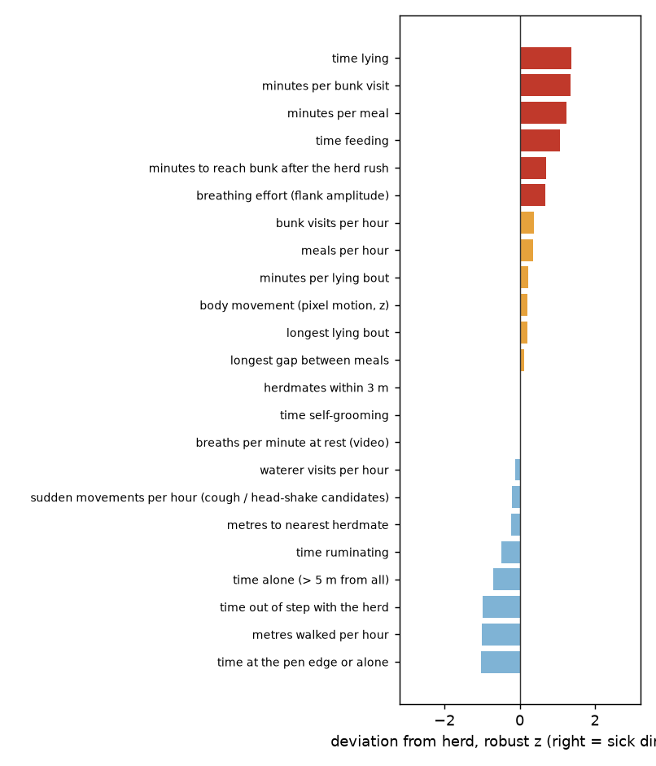

COW_01 elevated risk 0.33 rank 2 of 10
Pen 6, 11-07 00:04:06 to 11-09 00:01:11 (48.0 h of video). Seen for 32.4 h. Rank stable in 67% of time resamples. Confidence: medium.
What to do
COW_01 is a mild feeding/lying outlier but eats well and for a full duration during the main daily feed rushes, and her resting breathing is normal at 21 breaths/min. No clinical BRD signs were visible in the available footage; head, ear and eye views were all head-down at the bunk so those signs are not assessable. Recommend a routine hands-on look at the next feeding to confirm appetite and check the head/muzzle, but no urgent pull is indicated.
Why
- time feeding 4% vs herd 8% at the same hours (z -1.1, 30.5 h observed)
- minutes per bunk visit 5.8 min vs herd median 9.5 min (z -1.3, 32.4 h observed)
- time lying 57% vs herd 51% at the same hours (z +1.4, 30.5 h observed)
Behavior score 0.38; visual signs moved the log-odds by -0.25.
Behavior vs herd

Clips
behavior: feeding share (at bunk): cam1 11-08 09:44:24 to 09:44:36
closest view: cam1 11-07 07:33:12 to 07:33:24
Visible clinical signs (agent review, self-checked)
| sign | status | evidence | note |
|---|
| head carried low / depressed | not_assessable | I0031, I0033 | Only head views are head-down eating at the bunk (normal feeding posture); no standing head-up daylight view obtained. |
| ears drooping | not_assessable | I0031, I0033 | Ears not cleanly resolvable in the available crops; no clean toward/side-on standing head view. |
| nasal discharge | absent | I0031, V0004 | Muzzle reasonably resolved in daylight toward-facing crop I0031 (>450px); no discharge seen. Low confidence, single frame. |
| ocular discharge / tearing | not_assessable | I0031, I0033 | Eyes not clearly visible in available crops. |
| laboured / open-mouth breathing, extended neck | absent | I0032 | Resting breathing 21/min across 3 valid windows, at herd median, no open-mouth or flank effort evident. |
| coughing posture | not_assessable | F-COW_01-jerk_rate | Jerk rate 29.5/h below herd median (30.2); no coughing posture confirmed on video. |
| hollow left flank / gaunt | not_assessable | I0024, I0033 | Flank/body condition not assessed from a clear side-on standing view. |
Agent assessment
The feeding deficit (F-COW_01-feeding_share, F-COW_01-meal_min, F-COW_01-bunk_visit_min) is real but mild and partly noisy: feed_response shows she responds normally and stays a full 16-27 min at the bunk on the major herd rushes (11-08 06:32, 09:39, 16:16), with slow/skipped visits mostly at minor troughs. The trend (I0021) shows a single-block spike on 11-07 12h, otherwise she tracks the herd band. Increased lying (F-COW_01-lying_share) is modest. The social 'drift' facts (cows_within_3m__trend, nn_distance_m__trend) are day-to-day change metrics on short coverage and are small; her absolute isolation/edge shares are actually BELOW herd (negative z). Breathing is normal (21/min). Overall a borderline behavioral outlier, not a convincing sick picture.
Sources
- [dart] DART pen-riding signs (Depression: head down, droopy ears, stiff gait; Appetite: slow to the bunk; Respiration: laboured breathing, nasal discharge, cough; Temperature). Purdue Extension VA-33-W. https://www.extension.purdue.edu/extmedia/VA/VA-33-W.pdf
- [ear_acc2022] Early detection of respiratory diseases in calves by use of an ear-attached accelerometer (n = 508): more inactive time on d -4, -2, 0 and longer lying on d -5, -2. Animals 2022. https://pubmed.ncbi.nlm.nih.gov/35565520/
- [feedlot_acc] High-risk feedlot calves with accelerometers (n = 364): activity reductions began >= 6 d before BRD diagnosis and were largest the day before; lying-bout changes. The Bovine Practitioner. https://bovine-ojs-tamu.tdl.org/bovine/article/view/2883
- [hart1988] Hart B.L. 1988. Biological basis of the behavior of sick animals. Neurosci. Biobehav. Rev. 12:123-137 (sickness behavior: lethargy, anorexia, reduced grooming, social withdrawal).
- [marchesini2018] Marchesini G. et al. 2018. Rumination and activity data as health indicators in beef cattle during the early fattening period. Vet. J. https://www.research.unipd.it/retrieve/e14fb26c-9cb8-3de1-e053-1705fe0ac030/Marchesini%202018_TVJ.pdf
- [merck_resp] Merck Veterinary Manual, reference guides: resting respiratory rate of adult cattle about 26-50 breaths/min; rapid, laboured breathing is a cardinal sign of respiratory disease. https://www.merckvetmanual.com
- [padua_water] Electronic drinkers in fattening beef cattle: animals treated for BRD drank less water (20.9 vs 27.3 L/d) and intake fell 2 d before treatment, but drinking time and visit counts did not change. Univ. Padova. https://research.unipd.it/handle/11577/3572258
- [scirep2022] Calves' social network position changes during an experimental respiratory pathogen challenge. Sci. Rep. 2022. https://doi.org/10.1038/s41598-022-13088-2
- [tamu_cusum] Texas A&M GrowSafe bull studies: feeding-behavior traits (bunk-visit duration, head-down duration, variability of non-feeding intervals) change 1-14 d before BRD diagnosis; CUSUM monitoring (J. Anim. Sci. 2019, doi:10.1093/jas/sky486). https://pmc.ncbi.nlm.nih.gov/articles/PMC6396243
- [toaff2018] Toaff-Rosenstein R.L., Tucker C.B. 2018. The sickness response at and before clinical diagnosis of spontaneous bovine respiratory disease. Appl. Anim. Behav. Sci. (feeding time reduced on the diagnosis day; fever precedes anorexia).
- [white2009] White B.J., Renter D.G. 2009. Bayesian estimation of the performance of using clinical observations and harvest lung lesions for diagnosing BRD in post-weaned beef calves. J. Vet. Diagn. Invest. 21:446-453 (clinical-sign diagnosis: Se ~62 %, Sp ~63 %).
- [wolfger2015] Wolfger B. et al. 2015. Feeding behavior as an early predictor of bovine respiratory disease in North American feedlot systems. J. Anim. Sci. 93:377-385 (meal intake, meal time and bunk-visit frequency predict BRD hazard in the week before pulling).
This is a screening index from video behavior, not a diagnosis. Confirm with a hands-on exam (rectal temperature, lung auscultation) before treatment.
Clinical-sign diagnosis of BRD is itself only ~62% sensitive and ~63% specific [white2009].